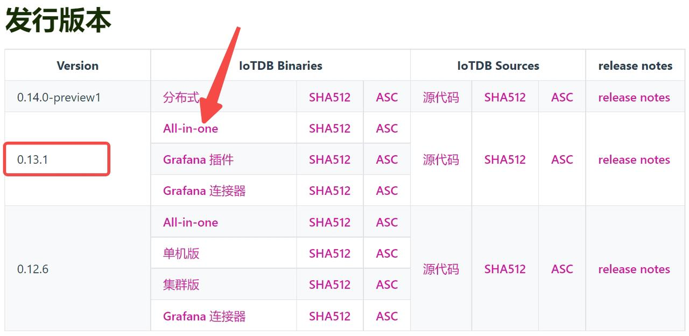

本指南介绍简易安装IoTDB单机版的方法，其他方法可参考官方文档。
使用环境
需具备JDK>=1.8 的运行环境，并配置好 JAVA_HOME 环境变量。
下载指引
Windows系统
首先前往官网下载页面：https://iotdb.apache.org/Download/
本文档使用的版本为0.13.1，点击“All-in-one”下载即可。下载的压缩包里包含了Linux、Windows和Mac系统所需的文件。
之后更新的版本会放到上面，可以根据需要进行更新。注：下图的0.12.6,和0.13.1，12和13表示大版本，即有了大改动的版本。而5和0是小版本，即有了小改动的版本。

Linux系统
0.13.1版本的官方下载地址为：https://dlcdn.apache.org/iotdb/0.13.1/apache-iotdb-0.13.1-all-bin.zip
配置指南
下载完压缩包后，Windows和Mac系统下只需解压，而Linux系统下解压后还需进行简单的配置，以保证IoTDB运行文件量大时不出错。
打开最大文件数限制
Linux系统下建议设置最大的打开文件数为65535，我们可以先检查系统目前设置的最大打开文件数为多少。
查看软限制的指令：
ulimit -Sn
查看硬限制的指令：
ulimit -Hn
如果显示的数字，如下图为65535，就不用修改了。如果小于65535，则要再设置为65535。
这是设置之后的查看结果：
软限制：
# ulimit -Sn
65535
硬限制：
# ulimit -Hn
65535